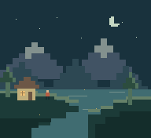

PLAYER 01 NOAH ADHIKARI
Noah Adhikari
Education enthusiast.
Automation addict.
Mediocre musician.

I like understanding how things work.
Then seeing what I can do with them.
My background is in computer science and applied mathematics at UC Berkeley. I’m interested in the places where the two meet: automation, robotics, and making sense of data.
I also like teaching and working things out with other people. Outside of that, I play piano and guitar, sing, and occasionally lose track of time over a chessboard.
- Python
- Java
- Applied mathematics
- Robotics
- Music
A few things
I’ve spent time on.
Some projects, some ideas.
Mostly an excuse to learn something.
01Voice-controlled carROBOTICS / CONTROL SYSTEMS
Taking spoken instructions and turning them into movement. A project from my time at Berkeley exploring programming and control systems in the physical world.
How do you turn “go left” into a useful instruction for a machine?
02Melody harmonizerMUSIC / MACHINE LEARNING
An idea from my original site: take an input melody and use machine learning to suggest an accompaniment. An exploration of something I enjoy from both sides—writing code and making music.
What makes two notes belong together?
Concept / not a released tool03Pioneers in EngineeringEDUCATION / COMMUNITY
At Berkeley, I was part of Pioneers in Engineering, a student organization making robotics competitions more accessible to high school students. A way to share what I was learning and learn from others in the process.
Usually near
a piano.
Or a guitar. During my Berkeley years, I performed for senior homes with CalCommunityMusic.
You can play this one.
A S D F G H J K / play a note